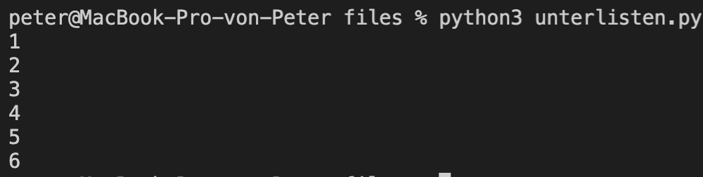

Dokumente
Hilfreiche Links
Wichtig: Verbringen sie nicht zu viel Zeit mit der Theorie. Stundenlang Videos schauen oder Texte lesen, wird sie nicht weiterbringen. Beim Programmieren geht es um das “Können” und nicht um das “Wissen”. Deshalb empfehle ich ihnen, selber zu experimentieren und viel zu üben (z. B. mit den Aufträgen oder eigenen Ideen/Projekten).
Auf Youtube finden sie (teilweise) gute Erklärvideos zum Thema Python. Hier sind einige Beispiellinks zu den Themen Listen I, Listen II und Listen iterieren.
Die Plattform W3Schools bietet sich als Nachschlagewerk an (in Englisch). Hier ist der Link zum Thema Listen.
Auf der Website von Sylvia Lange finden sie noch weitere (gute) Übungsaufgaben. Hier sind die Aufgaben (13) und die Lösungen [13] zum Thema Conditionals/Verzweigungen.
Prüfungsvorbereitung
Lösungsvorschlag Aufträge
Was macht diese Programm und was ist der Output?
x = [6, 3, 8, 5, 7, 2, 4, 0, 5] z = 0 for y in x: if y > z: z = y print(z)
Eine Liste kann auch “Unterlisten” haben. Schreiben sie ein Programm, welches die folgende Liste ausgibt:
x = [[1, 2],[3, 4],[5, 6]]
Wievielmal kommt das Wort “lorem” (Gross- und Kleinschreibung) vor? Erstellen sie ein Programm, welches das Wort “lorem” (Gross- und Kleinschreibung) im folgenden Text zählt:
text = ["Lorem", "ipsum", "dolor", "sit", "amet", "consetetur", "sadipscing", "elitr", "lorem", "sed", "lorem", "diam", "nonumy", "eirmod", "tempor", "invidunt", "Lorem", "ut", "labore", "et", "dolore", "magna", "aliquyam", "erat", "sed", "diam", "voluptuz", "At", "lorem", "vero", "eos", "et", "accusam", "et", "justo", "duo", "lorem", "dolores", "et", "ea"]